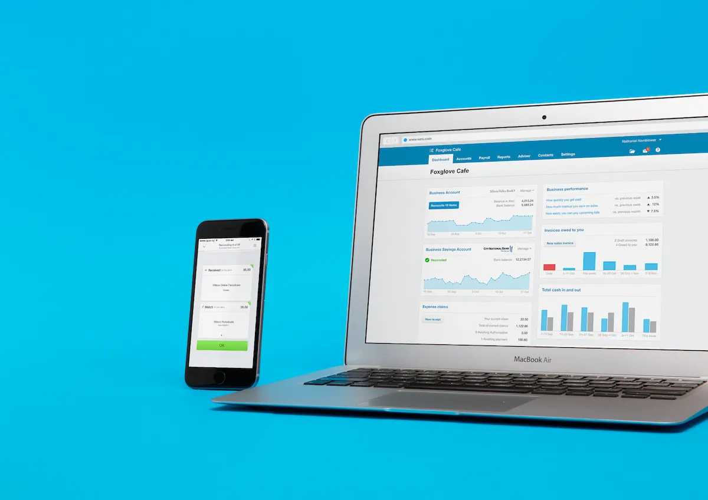

Local bookkeeping. Modern cloud tools.
Helping sole traders, subcontractors and small businesses keep their bookkeeping organised using Xero cloud software.
Register Your Interest
Crawley Down MTD is a local bookkeeping practice focused on helping busy tradespeople spend less time on paperwork and more time running their businesses.
Using Xero cloud accounting software and modern digital processes, clients can submit records electronically without needing to drop off paper files.
Monthly bookkeeping, reconciliations and record keeping.
Xero onboarding, bank feeds and receipt capture setup.
Maintaining digital records in support of HMRC Making Tax Digital requirements.
Click the button below to send an enquiry using your email application.
By contacting Crawley Down MTD you acknowledge our Privacy Notice.